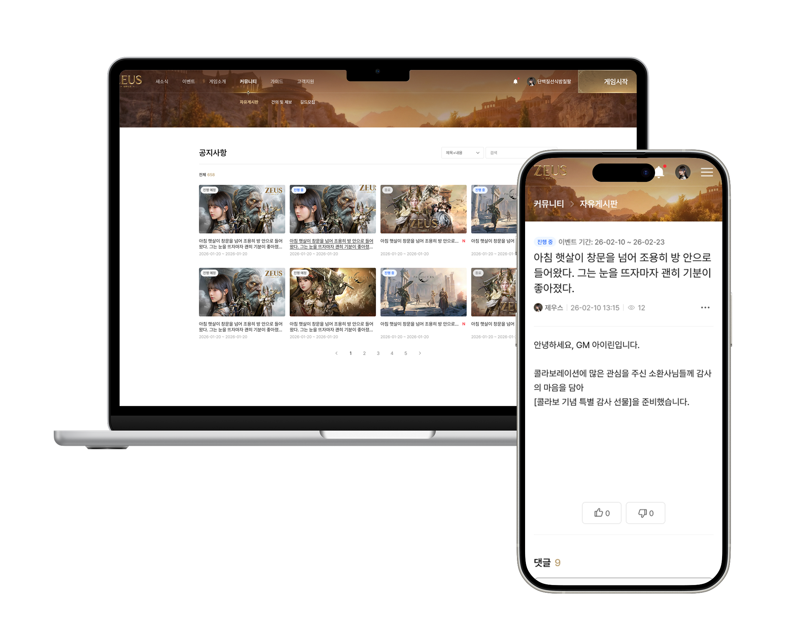
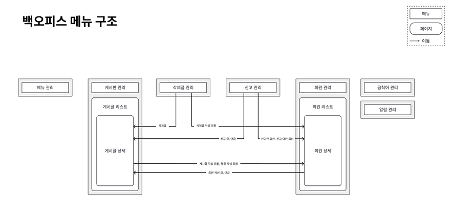
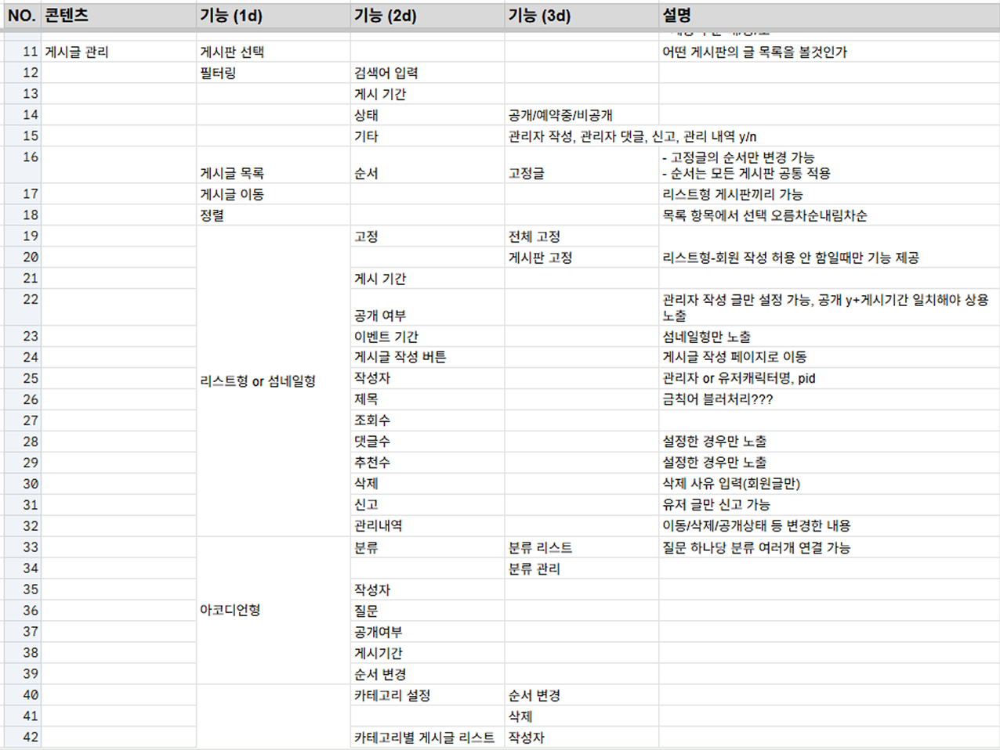
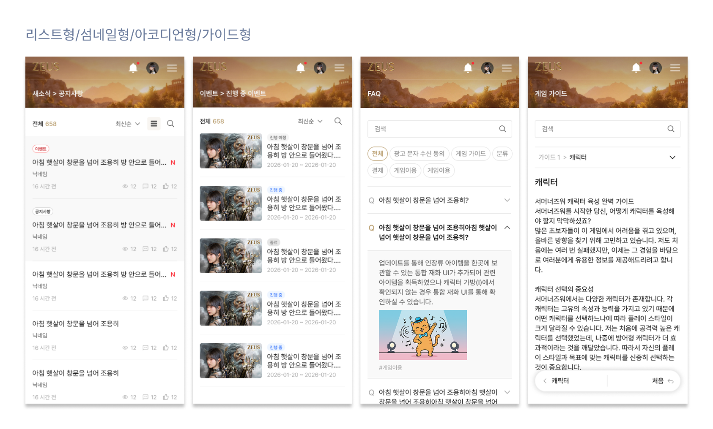
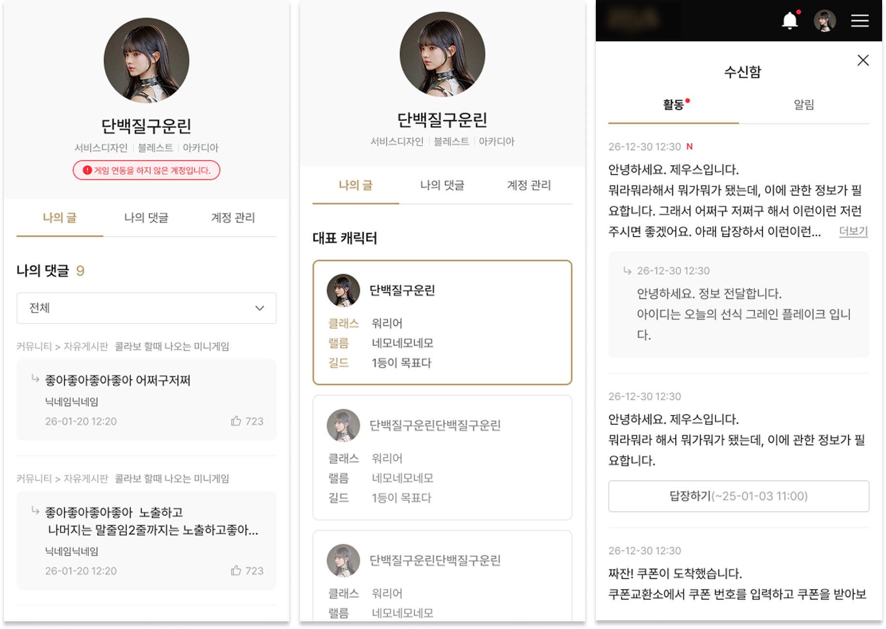

참여율 100% (기획 및 프로젝트 리딩)
커뮤니티 서비스 구축
외부 커뮤니티 의존도 최소화 및 브랜드 사이트 활성화를 위한 자체 통합 커뮤니티 플랫폼
2025.12 ~ 2026.08

1 진행 배경 및 문제 의식
유저 방문율 지속 감소
게임 론칭 이후 브랜드 사이트 내 유저 간 소통 창구 부재로 유저 이탈 촉진
외부 툴 의존 한계
외부 솔루션 의존으로 인한 UI 제약 및 도메인 파편화, 유저 데이터 트래킹의 한계 명확
공지 및 유저 커뮤니티 제공을 통한
유저 리텐션 및 인바운드 트래픽 제고
다양한 형태의 UI 및 기능 개발을 통해
외부툴 의존 제거 및 추후 활용 가능성 고려
2 해결 과정
STEP 1 - 기본 문서 정리
-
백오피스 및 서비스 기능 정의
- 운영부서 니즈 취합 → 필수 기능 정리
- PRD 및 기능명세서 작성
- 문서 구체화 과정 중 AI 활용
-
커뮤니티 플랫폼 벤치마킹
- 기존 사용하던 외부 툴 기능 정리
- 블로그, 카페 등 게시글 작성 및 열람 기능을 제공하는 타사 서비스 조사
STEP 2 - 유관부서 논의 및 디테일 정리
- 기능명세서 공유 및 개발 방식 논의
-
개발 리소스 감안한 커스텀 가능/불가능 영역 분리
- 개발 리소스 감안
- 운영 부서 니즈 2차 취합
STEP 3 - 기획서 작성
Front Office
- 4개 템플릿 형태(리스트/섬네일/아코디언/가이드) 제공으로 운영 부서 니즈 충족 및 기획·개발 공수 최소화
- 마이페이지 내 활동 내역 제공으로 유저 활동 편의성 제고
- 게임 미연동 계정 제한 등 예외 케이스별 UX 라이팅 및 얼럿 시스템 최적화
Back Office
- 효율적인 콘텐츠 관리를 위한 '설정 기능(GNB 구성, 게시판 템플릿 제어)'과 '운영 기능(게시글/신고/회원 관리)'의 구조적 분리
-
게시글 상세, 회원 상세는 모든 메뉴에서 진입 가능한 구조
- 개발 작업 최소화, 사용자 이동 동선 최소화
-
어뷰징 대응을 위한 기능 제공
- 금칙어 관리
- 신고 관리(신고글 내역, 자동 삭제 및 회원 정지 기능)
- 삭제글 관리, 회원 관리

클릭하여 확대

클릭하여 확대

클릭하여 확대

클릭하여 확대
3 개선 결과
60% 방어
브랜드 사이트 리텐션
자체 소통 창구 활성화
100%↓
외부 솔루션 구독 비용
커뮤니티 템플릿 기반 확립
4개월↓
차기 구축 개발 공수
템플릿 기반 확립
Retrospect & Insight
- 프로젝트 초기 단계에서 기능 명세서를 선제적으로 정의하여 엣지 케이스를 조기 발견하고 스펙 조율 시간을 단축함
-
플랫폼 단위 기획 시 화면 설계에 앞서 도메인 정책 및 회원 권한 매트릭스 선결의 중요성 체득
(설계 오류로 인한 개발 리워크 최소화)